Social Insurance in China for Foreign Employees (2026): A Practical Guide for International Employers
Overview
For foreign companies operating in China, social insurance is not a peripheral HR topic—it is a core compliance and cost-management requirement. While the national legal framework provides the baseline, practical administration is handled locally. This means employers need both legal clarity and operational discipline to execute correctly.
This guide explains the current China situation, where implementation variance appears, and how overseas employers can structure day-to-day controls.
What social insurance covers in practice
In operational terms, employer-side social insurance handling usually intersects with:
- employee classification and onboarding documentation,
- contribution registration and monthly filing,
- payroll base and parameter administration,
- exception and correction workflows,
- evidence retention for audit and dispute readiness.
The key point for international teams is simple: social insurance compliance is not one isolated filing event. It is a recurring payroll-linked process.
China baseline: what is broadly consistent
At the national level, labor and social insurance laws establish employer obligations and the framework for participation. For foreign employers, this creates a default compliance posture: treat social insurance handling as a standard employment obligation unless a clearly documented and accepted exception path applies.
In other words, policy baseline comes first. Process adaptation comes second.
Why implementation still feels complex for foreign employers
The complexity comes less from reading the law and more from executing in real workflows:
- local process timelines can differ,
- document expectations can vary in detail,
- exception pathways require stronger evidence and approval discipline,
- payroll cycles can force practical fallback decisions if data is late.
Teams that overlook these operational realities often experience repeated reconciliation work, employee confusion, and avoidable escalation.
Local variance: where it usually appears
1) Processing rhythm
The same category of case may move at different speeds across locations, affecting payroll cutoffs and correction timing.
2) Documentation quality requirements
Completeness is necessary but not always sufficient; format and consistency also matter for smooth acceptance.
3) Exception handling rigor
Non-standard handling generally requires stronger supporting documentation and clearer approval records.
4) Employee communication pressure
When deductions differ from employee expectations, communication timing becomes a material operational risk.
Decision framework for foreign employers
A practical decision sequence is:
- Confirm national baseline and policy scope.
- Verify local processing assumptions for the relevant location.
- Assess document readiness before payroll lock.
- Separate standard and exception handling lanes.
- Ensure filing, reconciliation, and evidence archive are closed in-cycle.
This structure helps teams avoid “policy-correct but operation-failed” outcomes.
Situation-to-action table
| Situation area | Typical issue | Employer control |
|---|---|---|
| Policy baseline | Mixed internal assumptions | Use one validated baseline in HR/payroll playbooks |
| Local administration | Timing mismatch by city | Build location-aware calendars and SLA checkpoints |
| Documentation | Missing/late files | Add pre-run quality gates (D-7 to D-3) |
| Exceptions | Informal decisions | Route via controlled approval workflow |
| Employee communication | Post-payroll surprise | Pre-payroll notice and standard explanation templates |
Monthly operating controls (recommended)
Pre-run (D-10 to D-3)
- Validate employee category and location mapping.
- Confirm document completeness for standard and exception paths.
- Run simulation for affected employees.
- Freeze assumptions before payroll lock.
Run phase (D-2 to Payroll Day)
- Execute filing with parameter consistency.
- Track unresolved exceptions separately.
- Record decisions and approvals in an auditable format.
Post-run (D+1 to D+3)
- Reconcile expected vs actual outputs.
- Close correction tickets with owner and due date.
- Archive evidence pack (decision basis, filing output, communication log).
Common mistakes and how to prevent them
- Assuming legal understanding guarantees smooth execution
Prevention: enforce timeline and document controls.
- Treating exception paths as shortcuts
Prevention: require evidence-first approvals for non-standard handling.
- Communicating deductions too late
Prevention: send pre-payroll expectation notices and maintain response scripts.
- Weak traceability between decision and payroll output
Prevention: keep decision logs linked to filing and reconciliation records.
What this means for leadership
For CFO, HR, and country managers, social insurance quality is best assessed as an operating system, not a legal memo. The most useful management indicators are:
- exception closure SLA,
- missing-document ratio,
- reconciliation variance trend,
- employee dispute volume tied to deduction clarity.
These signals provide an early-warning view before compliance issues escalate.
Related guide nodes
- Social Insurance 5 versions index: https://jmcun777.github.io/blog-writer/dist/2026-02-24-social-insurance-versions/
- Operator Playbook: https://jmcun777.github.io/blog-writer/dist/2026-02-24-social-insurance-versions/2026-02-24-china-social-insurance-for-foreign-employees-2026-operator-playbook-for-hr-and-p/
- Compliance Checklist: https://jmcun777.github.io/blog-writer/dist/2026-02-24-social-insurance-versions/2026-02-24-china-social-insurance-for-foreign-employees-2026-compliance-checklist-for-in-ho/
- Risk Control Framework: https://jmcun777.github.io/blog-writer/dist/2026-02-24-social-insurance-versions/2026-02-24-2026-risk-control-framework-social-insurance-for-foreign-employees-in-china/
FAQ
Is the main challenge legal uncertainty?
For most international employers, the larger challenge is operational consistency across location, documentation, and payroll timing.
Can policy-compliant teams still have recurring payroll issues?
Yes. Policy compliance and process reliability are related but not identical; weak workflow controls can still produce repeated corrections.
What is the highest-priority improvement?
Implement a location-aware pre-payroll control cycle with explicit owner accountability.
Sources
- Social Insurance Law of the PRC (NPC): http://www.npc.gov.cn/zgrdw/englishnpc/Law/2009-02/20/content_1471106.htm
- Labor Contract Law of the PRC (NPC): http://www.npc.gov.cn/zgrdw/englishnpc/Law/2007-12/13/content_1384064.htm
- PwC Worldwide Tax Summaries (PRC): https://taxsummaries.pwc.com/peoples-republic-of-china/individual/other-taxes
Need local employment support in China?
If you need a compliance-first partner for hiring, payroll, and risk controls in China, China-Payroll.com can help evaluate the right setup.
Image Prompt Pack
Create a 16:9 hero image for article title: 'Social Insurance in China for Foreign Employees (2026): A Practical Guide for International Employers'. Scene: finance and payroll operations team reviewing contribution base dashboards in a modern office. Include m…